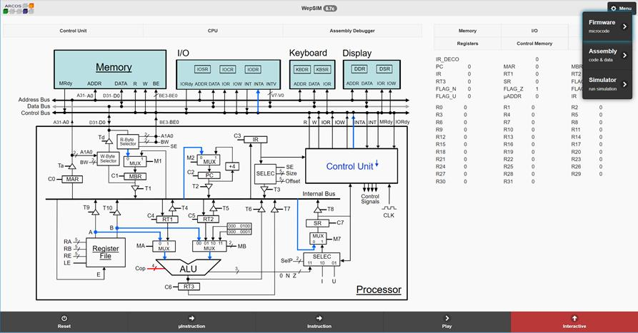
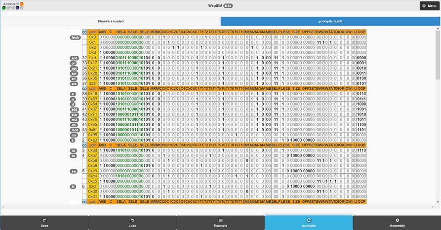

El microcódigo se carga a través de un fichero de texto que tiene tres secciones:
1. Lista de microprogramas
2. Nombrado de registros
3. Pseudo-instrucciones
La lista de microprogramas comienza con el código del fetch.
Un ejemplo de microprograma de fetch básico sería:
fetch
{
fetch: (T2, C0=1),
(Ta, Td, R, BW=11, C1),
(M2, C2, T1, C3),
(A0, B=0, C=0000)
}
Figura 11 Ejemplo de descripción para fetch
Las seńales de control situadas entre los paréntesis ( y ) se corresponden con las seńales a activar en un ciclo de reloj. Así el fetch necesita cuatro ciclos de reloj, el último se corresponde con la decodificación (incluida en dentro del fetch).
A continuación se encuentran el resto de microprogramas asociados a cada instrucción. Cada microprograma sigue el siguiente formato:
inst1 campo1 campo2 campo3
{
co=000000,
nwords=1,
campo1=reg(25,21),
campo2=reg(20,16),
campo3=reg(15,11),
{
(Cop=1001, SelP=11, C7, T6, LE,
SelA=10100, SelB=01111, SelE=10111,
A0=1, B=1, C=0)
}
}
Figura 12 Ejemplo de formato de descripción de una instrucción
Donde la primera línea describe el nombre de la instrucción (inst1) y los parámetros que tiene (registros, valores inmediatos, etc.). A continuación se abre un bloque con llaves para describir dicha instrucción.
El primer campo del ejemplo mostrado (co) indica los 6 bits que identifica unívocamente la instrucción. Esto no es del todo cierto para las instrucciones aritmético-lógicas puesto que es posible compartir el mismo código de operación y según el valor del campo cop diferenciarse. Un ejemplo de este caso sería:
inst1 campo1 campo2 campo3
{
co=000000,
cop=0000,
nwords=1,
campo1=reg(25,21),
campo2=reg(20,16),
campo3=reg(15,11),
{
(Cop=1001, SelP=11, C7, T6, LE,
SelA=10100, SelB=01111, SelE=10111,
A0=1, B=1, C=0)
}
}
Figura 13 Detalle en la descripción de una instrucción: campo cop
Los siguientes campos indican para cada uno de los parámetros qué tipo es (registro, inmediato o dirección) así como el bit de inicio y final entre los cuales está el valor de dicho
parámetro.
El tipo de parámetro se indica con:
· parametro1 = reg(bit-inicio, bit-final): para un registro.
· parametro1 = inm(bit-inicio, bit-final): para un valor inmediato.
· parametro1 = addr(bit-inicio, bit-final)rel: para una dirección relativa.
· parametro1 = addr(bit-inicio, bit-final)abs: para una dirección absoluta.
A continuación se abre un bloque donde se indicará el microprograma correspondiente a la instrucción. Las seńales de cada ciclo están entre paréntesis y se separan dichos ciclos por coma. Si solo hay un ciclo no es necesario la coma. Dentro de los paréntesis se indicarán las seńales y el valor correspondiente. Si es una seńal de un bit, con solo poner el nombre de la seńal se entenderá que su valor es uno. El valor de la seńal se ha de indicar en binario, usando tantos bits como tenga asociado la seńal. Las seńales y su valor correspondientes se separan usando una coma.
Para el nombrado de registros se precisa indicar la etiqueta que se usará para cada uno de los 32 registros del banco de registros. Un ejemplo de esta sección es:
registers
{
0=$zero,
1=$at,
2=$v0,
3=$v1,
4=$a0,
5=$a1,
6=$a2,
7=$a3,
.
.
.
24=$t8,
25=$t9,
26=$k0,
27=$k1,
28=$gp,
29=$sp (stack_pointer),
30=$fp,
31=$ra
}
Figura 14 Ejemplo de nombrado de registros
En la que se indican los nombres usados en la arquitectura MIPS32. En este ejemplo el registro 29 etiquetado con $sp tiene el atributo "(stack_pointer)" para indicar que será usado como
puntero de pila.
Por último es posible definir pseudo-instrucciones.
Un ejemplo de pseudoinstrucción sería:
Pseudoinstructions
{
li reg num
{
lui reg sel(31,16,num) ;
ori reg reg sel(15,0,num)
}
}
Figura 15 Ejemplo de pseudo-instrucción (sección opcional)
Donde el operador "sel(bit-inicio, bit-final, campo)" permite seleccionar una serie de bits de uno de los campos de la pseudo-instrucción.
Un fichero de texto con las tres secciones antes comentadas (microcódigo, nombrado de registro y definición de pseudo-instrucciones) se carga en la pantalla de Firmware. Para acceder a dicha pantalla se ha de ir al menú (parte superior derecha) e indicar la opción Firmware (véase la Figura 16)

Figura 16 Pantalla principal: opción de carga de firmware
A continuación aparecerá una pantalla con un cuadro de texto que permite indicar el firmware (las tres secciones antes comentadas). Es posible cargar un firmware existente
usando el botón "Load" de la barra inferior, modificar un firmware anteriormente cargado o salvar el firmware en curso con el botón "Save" de la barra inferior. Una vez se indique el
firmware es preciso hacer clic en el botón "µcompile" para pasar a binario y cargar en la memoria de control dicho firmware, como se muestra en la Figura 17.

Figura 17 Pantalla firmware: cuadro de texto con firmware a cargar
Una vez cargado el nuevo firmware correctamente aparecerá la pantalla mostrada en la Figura 18 en la que se muestra la memoria de control con los valores
que almacena.

Figura 18 Pantalla firmware: firmware finalmente compilado
El siguiente paso es la carga del programa ensamblador que permita probar este firmware, para ello podemos pulsar el botón "Assembly" de la barra inferior.